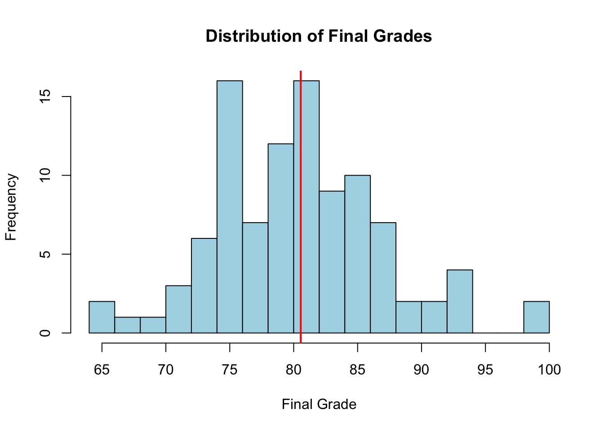
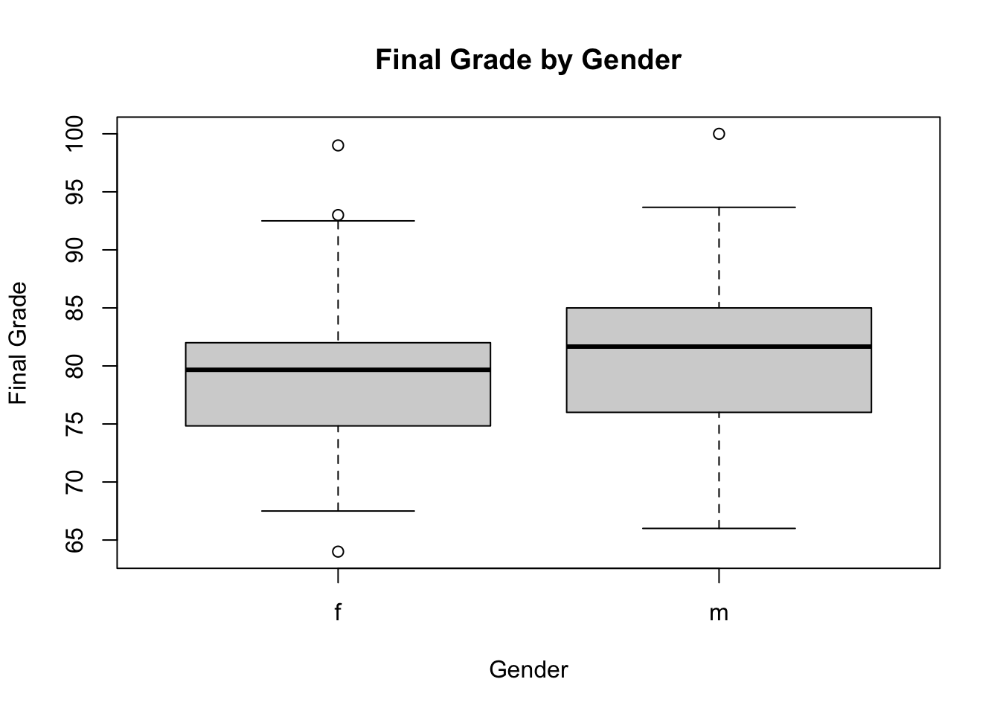
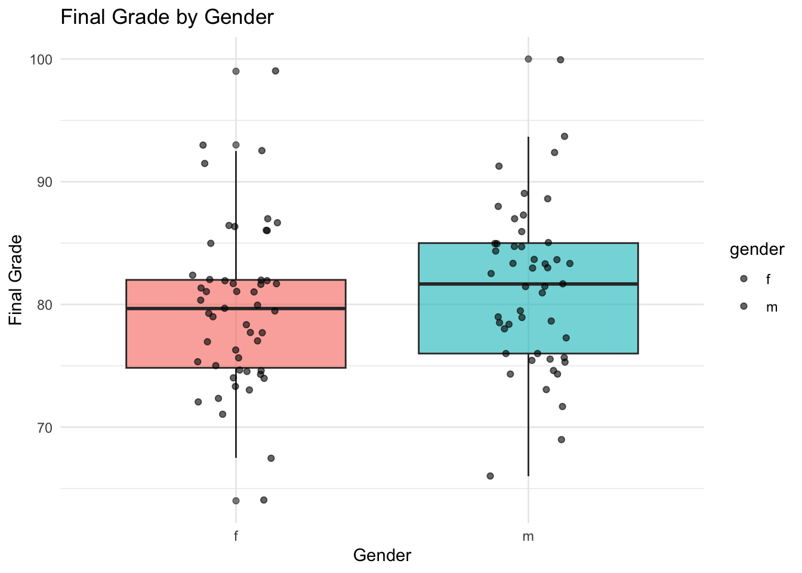
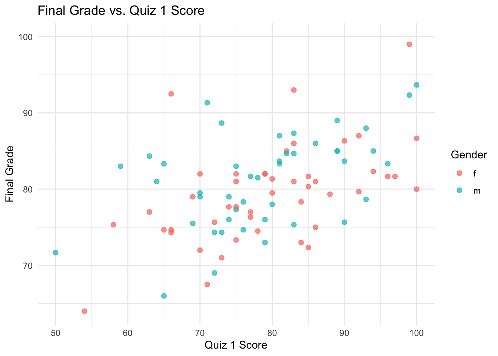

Code
set.seed(123)
n <- 100
gen.quiz <- function(mean, sd)
{
x <- round(rnorm(n, mean, sd))
pmin(100, pmax(0, x))
}
quiz1 <- gen.quiz(78, 12)
quiz2 <- gen.quiz(74, 14)
quiz3 <- gen.quiz(80, 10)
quiz4 <- gen.quiz(70, 15)Throughout this unit we will use one running example to introduce the basic building blocks of R: vectors, strings, special values, matrices, data frames, lists, functions, file I/O, and graphics.
The mission: a class of 100 students has taken four quizzes, each scored out of 100 points. Each student’s final grade is the average of their best three quiz scores – that is, we drop each student’s single lowest quiz score before averaging. To make things realistic, quite a few students missed one quiz or another, so we also need to handle missing values correctly. We want to
This mirrors how real data-analysis code is usually built: explore on one case, generalize into a function, then apply and report.
The score on each quiz, across all students, is naturally stored as a vector. We simulate a class of 100 students, each quiz scored out of 100, using rnorm and clipping the result to a valid 0-100 range with pmin/pmax:
set.seed(123)
n <- 100
gen.quiz <- function(mean, sd)
{
x <- round(rnorm(n, mean, sd))
pmin(100, pmax(0, x))
}
quiz1 <- gen.quiz(78, 12)
quiz2 <- gen.quiz(74, 14)
quiz3 <- gen.quiz(80, 10)
quiz4 <- gen.quiz(70, 15)To make the data realistic, we then mark a random 10% of the entries in each quiz as missing – a student who did not sit that quiz:
miss.rate <- 0.10
quiz1[sample(n, round(n*miss.rate))] <- NA
quiz2[sample(n, round(n*miss.rate))] <- NA
quiz3[sample(n, round(n*miss.rate))] <- NA
quiz4[sample(n, round(n*miss.rate))] <- NA
head(quiz3, 20) [1] NA 93 77 85 76 NA 72 74 NA 79 81 82 92 NA 70 97 76 73 NA 67Ordinary arithmetic propagates a missing value rather than silently ignoring it, which is exactly the safe default we want:
mean(quiz3)[1] NAmean(quiz3, na.rm = TRUE)[1] 80.83333We could type out "Quiz1", "Quiz2", … by hand, but paste0 builds such labels programmatically – a habit that pays off the moment there are 40 quizzes instead of 4:
quiz.names <- paste0("Quiz", 1:4)
quiz.names[1] "Quiz1" "Quiz2" "Quiz3" "Quiz4"With 100 students, typing out individual names is not realistic either. sprintf generates zero-padded IDs like "S001", "S002", … in one line – exactly the kind of job it is built for:
students <- sprintf("S%03d", 1:n)
head(students)[1] "S001" "S002" "S003" "S004" "S005" "S006"sprintf is equally useful for turning numbers back into readable text. Here we first find a student who is missing at least one quiz (using is.na and which, which we revisit below), and then build a one-line summary for them:
example.ix <- which(is.na(quiz1) | is.na(quiz2) | is.na(quiz3) | is.na(quiz4))[1]
example.name <- students[example.ix]
sprintf("%s's scores were: %s", example.name,
paste(c(quiz1[example.ix],quiz2[example.ix],quiz3[example.ix],quiz4[example.ix]), collapse = ", "))[1] "S001's scores were: 71, 64, NA, 59"Binding the four quiz vectors together as columns gives a matrix with one row per student and one column per quiz. We then attach the row and column names we just built:
scores <- cbind(quiz1,quiz2,quiz3,quiz4)
colnames(scores) <- quiz.names
rownames(scores) <- students
dim(scores)[1] 100 4head(scores) Quiz1 Quiz2 Quiz3 Quiz4
S001 71 64 NA 59
S002 75 78 93 59
S003 97 71 77 56
S004 79 NA 85 54
S005 80 61 76 NA
S006 99 NA NA 75A matrix is indexed as [row, column]. This lets us pull out one student’s record, one quiz’s results, or a logical selection such as “every score above 95”:
scores[example.name, ]Quiz1 Quiz2 Quiz3 Quiz4
71 64 NA 59 head(scores[, "Quiz1"])S001 S002 S003 S004 S005 S006
71 75 97 79 80 99 head(scores[scores > 95])[1] 97 99 NA NA NA 99is.na locates missing values anywhere in an object, including a whole matrix at once. With 100 students and a 10% missing rate per quiz, there are quite a few:
colSums(is.na(scores))Quiz1 Quiz2 Quiz3 Quiz4
10 10 10 10 sum(is.na(scores))[1] 40head(which(is.na(scores), arr.ind = TRUE)) row col
S008 8 1
S012 12 1
S015 15 1
S035 35 1
S039 39 1
S041 41 1It is worth knowing what happens in the extreme case where a student has no recorded quiz at all: taking the mean of zero numbers is not zero, it is undefined, and R represents that with NaN (“not a number”) rather than NA:
mean(numeric(0))[1] NaNis.nan(mean(numeric(0)))[1] TRUEWe will rely on this distinction later, so that our function can automatically flag a student with no data at all.
A data frame lets us combine columns of different types – here, the students’ names and gender alongside their (numeric) quiz scores – into a single table:
gender <- factor(sample(c("f","m"), n, replace = TRUE))
roster <- data.frame(name = students, gender = gender, scores)
head(roster)Because the row names of scores were dropped when it became columns of roster, we now identify students by the name column instead. grep can find, by pattern, which columns hold quiz scores – handy since we built those names programmatically earlier:
quiz.cols <- grep("^Quiz", names(roster))
quiz.cols[1] 3 4 5 6names(roster)[quiz.cols][1] "Quiz1" "Quiz2" "Quiz3" "Quiz4"The usual data-frame subsetting tools – [ , ], $, and subset – work as expected, and tapply lets us summarize a column by group, e.g. the average Quiz1 score by gender:
head(roster[roster$gender == "f", ])head(subset(roster, Quiz1 > 90))tapply(roster$Quiz1, roster$gender, mean, na.rm = TRUE) f m
79.58696 78.65909 We now have everything needed to work out S001’s final grade by hand. A list is the natural container for the result, because it bundles pieces of different shapes – the raw scores, the scores kept, the score dropped, and a single final number – under one name:
example.scores <- as.numeric(roster[roster$name == example.name, quiz.cols])
example.scores[1] 71 64 NA 59valid <- example.scores[!is.na(example.scores)]
valid[1] 71 64 59i.min <- which.min(valid)
kept <- valid[-i.min]
final <- mean(kept)
result <- list(raw = example.scores, kept = kept, dropped = valid[i.min], final = final)
result$raw
[1] 71 64 NA 59
$kept
[1] 71 64
$dropped
[1] 59
$final
[1] 67.5This confirms the calculation for one student. The rest of the unit turns this scratch work into something we can reuse and apply to everyone.
Before relying on which.min, it is worth seeing explicitly how a computer finds a minimum: by walking through the values one at a time and remembering the smallest one seen so far. This is the same control-flow pattern (a for loop with an if inside) used throughout numerical computing:
find.lowest <- function(x)
{
n <- length(x)
i.min <- 1
x.min <- x[1]
if(n > 1)
{
for(i in 2:n)
{
if(x[i] < x.min)
{
x.min <- x[i]
i.min <- i
}
}
}
list(value = x.min, index = i.min)
}
find.lowest(valid)$value
[1] 59
$index
[1] 3R’s built-in which.min (and, for dropping more than one value, order) does the same job in one call, and is what we will use going forward:
which.min(valid)[1] 3order(valid)[1] 3 2 1We now wrap the full calculation – discard missing quizzes, drop the lowest remaining score(s), average what’s left – into one function. Passing n.drop as an argument (rather than hard-coding “drop 1”) makes the function reusable for a different grading policy later. Following the special-value discussion above, a student with no valid quiz at all correctly returns NaN instead of causing an error:
compute.final.grade <- function(scores, n.drop = 1)
{
valid <- scores[!is.na(scores)]
if(length(valid) == 0)
{
return(list(raw = scores, kept = numeric(0), dropped = numeric(0), final = NaN))
}
#never drop every remaining score
n.drop <- min(n.drop, length(valid) - 1)
if(n.drop > 0)
{
drop.ix <- order(valid)[1:n.drop]
dropped <- valid[drop.ix]
kept <- valid[-drop.ix]
}
else
{
dropped <- numeric(0)
kept <- valid
}
list(raw = scores, kept = kept, dropped = dropped, final = mean(kept))
}Checking the function against the by-hand result for S001, and against the all-missing edge case:
compute.final.grade(example.scores)$raw
[1] 71 64 NA 59
$kept
[1] 71 64
$dropped
[1] 59
$final
[1] 67.5compute.final.grade(c(NA,NA,NA,NA))$raw
[1] NA NA NA NA
$kept
numeric(0)
$dropped
numeric(0)
$final
[1] NaNapply(X, 1, FUN) calls FUN once per row of X – exactly what we need to run compute.final.grade on every student’s four quiz scores:
final.scores <- apply(roster[, quiz.cols], 1, function(x) compute.final.grade(x)$final)
summary(final.scores) Min. 1st Qu. Median Mean 3rd Qu. Max.
64.00 75.62 81.00 80.55 84.67 100.00 roster$final <- final.scoresThe dropped score for each student is extracted the same way, and both new columns are added to roster:
roster$dropped <- sapply(1:nrow(roster), function(i) {
r <- compute.final.grade(as.numeric(roster[i, quiz.cols]))
if(length(r$dropped) == 0) NA else r$dropped
})
head(roster)It is instructive to compare this with a fully vectorized alternative that needs no per-student function call at all: if we did not need to drop a quiz, the weighted total for every student could be computed in one line via matrix multiplication of the score matrix by a vector of weights:
w <- rep(1/4, 4)
weighted.total <- as.matrix(roster[, quiz.cols]) %*% w
head(weighted.total) [,1]
S001 NA
S002 76.25
S003 75.25
S004 NA
S005 NA
S006 NAsum(is.na(weighted.total))[1] 34Notice that 34 students come back with NA – matrix multiplication has no way to skip a missing value on its own, so a single missed quiz spoils the whole sum. This is precisely why we wrote compute.final.grade: it encodes the extra logic (ignore missing quizzes, then drop the lowest) that a single matrix operation cannot express.
The final roster is worth keeping. A data frame can be written as a plain csv file for spreadsheets, or saved as an .RDS file to preserve it exactly (including the gender factor) for future R sessions:
write.csv(roster, file = "roster.csv", row.names = FALSE)
saveRDS(roster, file = "roster.RDS")
roster.reloaded <- readRDS("roster.RDS")
identical(roster, roster.reloaded)[1] TRUEA quick histogram shows the distribution of final grades, with a vertical line marking the class average:
hist(roster$final, breaks = 15, col = "lightblue",
main = "Distribution of Final Grades", xlab = "Final Grade")
abline(v = mean(roster$final), col = "red", lwd = 2)
A side-by-side boxplot compares the two gender groups:
boxplot(final ~ gender, data = roster,
main = "Final Grade by Gender", xlab = "Gender", ylab = "Final Grade")
ggplot2 builds the same kind of comparison declaratively, by mapping columns of roster to visual properties and layering geometries with +. Here the boxplot is enhanced with the individual student scores jittered on top:
library(ggplot2)
ggplot(roster, aes(x = gender, y = final, fill = gender)) +
geom_boxplot(show.legend = FALSE, alpha = 0.6) +
geom_jitter(width = 0.15, size = 1.5, alpha = 0.6) +
labs(
title = "Final Grade by Gender",
x = "Gender", y = "Final Grade"
) +
theme_minimal()
We can also ask a natural follow-up question – does a strong first quiz predict a strong final grade? – with a scatter plot colored by gender:
ggplot(roster, aes(x = Quiz1, y = final, color = gender)) +
geom_point(size = 2, alpha = 0.7) +
labs(
title = "Final Grade vs. Quiz 1 Score",
x = "Quiz 1 Score", y = "Final Grade", color = "Gender"
) +
theme_minimal()Warning: Removed 10 rows containing missing values or values outside the scale range
(`geom_point()`).
Finally, gt turns a slice of roster into a polished report table instead of a plain printout. With 100 students we show just the first 10 rows: a title, grouped “Quizzes” columns, one decimal place on the computed grade, and a readable symbol for any missing quiz.
library(gt)
head(roster, 10) |>
gt(rowname_col = "name") |>
tab_header(
title = "Course Grade Report",
subtitle = "Each student's lowest quiz score is dropped (first 10 students shown)"
) |>
sub_missing(columns = everything(), missing_text = "—") |>
fmt_number(columns = final, decimals = 1) |>
cols_label(
gender = "Gender",
dropped = "Dropped Score",
final = "Final Grade"
) |>
tab_spanner(label = "Quizzes", columns = c(Quiz1, Quiz2, Quiz3, Quiz4)) |>
tab_stubhead(label = "Student")| Course Grade Report | |||||||
| Each student's lowest quiz score is dropped (first 10 students shown) | |||||||
| Student | Gender |
Quizzes
|
Final Grade | Dropped Score | |||
|---|---|---|---|---|---|---|---|
| Quiz1 | Quiz2 | Quiz3 | Quiz4 | ||||
| S001 | f | 71 | 64 | — | 59 | 67.5 | 59 |
| S002 | f | 75 | 78 | 93 | 59 | 82.0 | 59 |
| S003 | f | 97 | 71 | 77 | 56 | 81.7 | 56 |
| S004 | f | 79 | — | 85 | 54 | 82.0 | 54 |
| S005 | m | 80 | 61 | 76 | — | 78.0 | 61 |
| S006 | f | 99 | — | — | 75 | 99.0 | 75 |
| S007 | f | 84 | 63 | 72 | 40 | 73.0 | 40 |
| S008 | f | — | — | 74 | 73 | 74.0 | 73 |
| S009 | m | 70 | 69 | — | 89 | 79.5 | 69 |
| S010 | m | 73 | 87 | 79 | 100 | 88.7 | 73 |